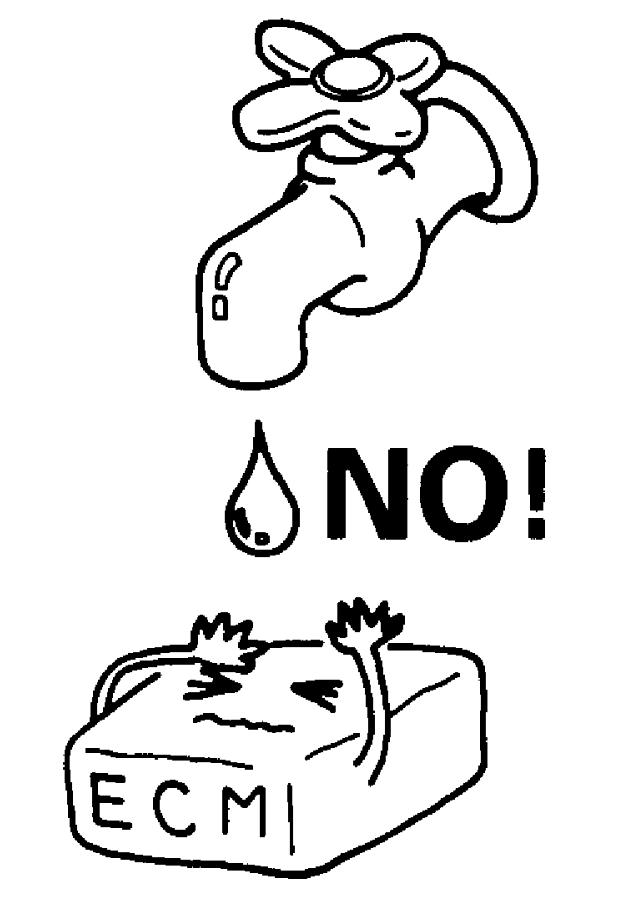

00
| General Precautions |
WARNING and CAUTION describe some general precautions that you should observe when servicing a vehicle. These general precautions apply to many of the service procedures, but they will not necessarily be repeated for every procedure to which they apply.
Failure to take proper precautions when servicing a vehicle can cause severe personal injury.
•Whenever raising a vehicle for service, follow the instructions under Vehicle Lifting Points.
•If the service work being performed requires running the engine, check that the parking brake is fully set, block drive wheels and the transaxle is in “Neutral” or “P” range.
Also keep hands, hair, clothing, tools, etc. away from the fan and belts while the engine is running.
•When running the engine indoors, provide a means to force exhaust gases outdoors.
•Do not perform service work in areas where combustible materials can come into contact with a hot exhaust system component.
•Handle toxic or flammable materials (such as gasoline and refrigerant) only in a well-ventilated area.
•Keep away from hot metal parts such as the radiator, exhaust manifold, tail pipe and muffler to avoid getting burned.
•Avoid contact with new and used engine oil. Prolonged contact with used engine oil has been proven to cause skin cancer in laboratory animals. Brief contact with used oil may irritate the skin. To minimize exposure to used engine oil, wear a long-sleeve shirt and moisture-proof gloves (such as dish washing gloves) when changing engine oil. If engine oil contacts your skin, wash thoroughly with soap and water. Launder any clothing or rags if wet with oil. Recycle or properly dispose of used oil and filters.
•Whenever handling service materials, wear safety glasses to protect your eyes. Any service material getting into your eye may cause inflammation. Also wear moisture-proof gloves to protect your skin.
•Do not swallow any service materials. Swallowing them could cause diarrhea, nausea or other health problems. Be especially careful not to allow children and pets to swallow them.
•Keep all service materials out of reach of children and pets.
•Check that the hood is fully closed and securely latched before driving the vehicle.
If the hood is not fully closed and latched, it can fly up unexpectedly while driving, obstructing the driver’s view and leading to an accident.
•If the service work being performed requires running the engine, check that the parking brake is fully set, block drive wheels and the transaxle is in “Neutral” or “P” range.
Also keep hands, hair, clothing, tools, etc. away from the fan and belts while the engine is running.
•When running the engine indoors, provide a means to force exhaust gases outdoors.
•Do not perform service work in areas where combustible materials can come into contact with a hot exhaust system component.
•Handle toxic or flammable materials (such as gasoline and refrigerant) only in a well-ventilated area.
•Keep away from hot metal parts such as the radiator, exhaust manifold, tail pipe and muffler to avoid getting burned.
•Avoid contact with new and used engine oil. Prolonged contact with used engine oil has been proven to cause skin cancer in laboratory animals. Brief contact with used oil may irritate the skin. To minimize exposure to used engine oil, wear a long-sleeve shirt and moisture-proof gloves (such as dish washing gloves) when changing engine oil. If engine oil contacts your skin, wash thoroughly with soap and water. Launder any clothing or rags if wet with oil. Recycle or properly dispose of used oil and filters.
•Whenever handling service materials, wear safety glasses to protect your eyes. Any service material getting into your eye may cause inflammation. Also wear moisture-proof gloves to protect your skin.
•Do not swallow any service materials. Swallowing them could cause diarrhea, nausea or other health problems. Be especially careful not to allow children and pets to swallow them.
•Keep all service materials out of reach of children and pets.
•Check that the hood is fully closed and securely latched before driving the vehicle.
If the hood is not fully closed and latched, it can fly up unexpectedly while driving, obstructing the driver’s view and leading to an accident.
•Before starting any service work, cover fenders, seats and any other parts that are likely to get scratched or stained during servicing. Also, be aware that what you wear (e.g. buttons) may cause damage to the vehicle’s finish.
 •When performing service to electrical parts that does not require use of battery power, disconnect negative (–) cable at battery.
•When performing service to electrical parts that does not require use of battery power, disconnect negative (–) cable at battery.
•Before disconnecting the negative (–) cable at the battery or after connecting the cable to the battery, perform the following points.
•When removing parts that are to be reused, keep them arranged in an orderly manner so that they can be reinstalled in the proper order and into the correct positions.
•Do not reuse oil seals, gaskets, packing, O-rings, lock washers, split pins, self-locking nuts, and other specified parts, but use new ones. Also, before installing new gaskets, packing, etc., remove any residual material from the mating surfaces.
•Check that all parts used for reassembly are thoroughly clean.
When the use of a certain type of lubricant, adhesive or sealant is specified, use only the specified material.
“A”: Sealant 99000-XXXXX (SUZUKI Bond No.XXXXX)
•Use special tools when instructed.
Special tool
(A): 09917-XXXXX
(B): 09916-XXXXX
•After servicing any system that is concerned with fuel, oil, coolant, vacuum, exhaust gases or brakes, check all related lines for leakage.
•Never disconnect any of the fuel lines between fuel pump and injectors without first releasing the fuel pressure, or fuel can be sprayed out under pressure.
•When performing any work that produces a heat exceeding 80 °C (176 °F) in the vicinity of the electrical parts, remove the heat-sensitive electrical part(s) beforehand.
•Do not expose connectors and electrical parts to water, which will cause trouble to electrical systems.
•Do not handle electrical components (computers, relays, etc.) in a rough manner or drop them.
 "Expand image")
•Before disconnecting the negative (–) cable at the battery or after connecting the cable to the battery, perform the following points.
—Set ignition “OFF”, and leave ignition “OFF” for at least 60 seconds and then disconnect the cable.
—Check and record DTCs in all control modules if necessary before disconnecting the cable.
—Record displayed contents of the clock, audio system, etc. before disconnecting to be able to restore the original settings after connecting the cable.
—Perform electric throttle control system calibration after reconnecting the negative (–) cable at the battery. (M16A model and K14C model)
•When removing the battery, disconnect the negative (–) cable first and then the positive (+) cable. When reconnecting the battery, connect the positive (+) cable first and then the negative (–) cable. Reinstall the terminal cover.—Check and record DTCs in all control modules if necessary before disconnecting the cable.
—Record displayed contents of the clock, audio system, etc. before disconnecting to be able to restore the original settings after connecting the cable.
—Perform electric throttle control system calibration after reconnecting the negative (–) cable at the battery. (M16A model and K14C model)
—M16A model: 
—K14C model:
—Perform power window system initialization referring to Power Window System Initialization / Reset (Front Driver Side Only) after reconnecting the negative (–) cable at the battery.—K14C model:
 "Expand image")
 "Expand image")
 "Expand image")
When the use of a certain type of lubricant, adhesive or sealant is specified, use only the specified material.
“A”: Sealant 99000-XXXXX (SUZUKI Bond No.XXXXX)
 "Expand image")
Special tool
(A): 09917-XXXXX
(B): 09916-XXXXX
 "Expand image")
 "Expand image")
•When performing any work that produces a heat exceeding 80 °C (176 °F) in the vicinity of the electrical parts, remove the heat-sensitive electrical part(s) beforehand.
 "Expand image")

 "Expand image")
 "Expand image")